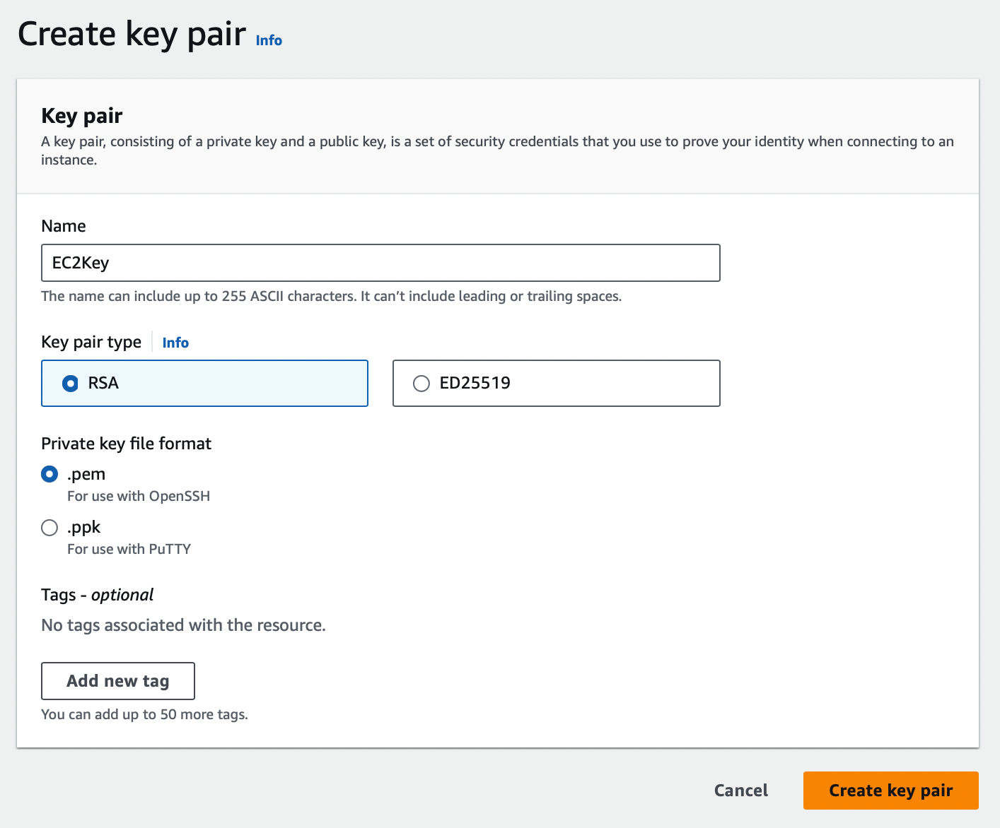
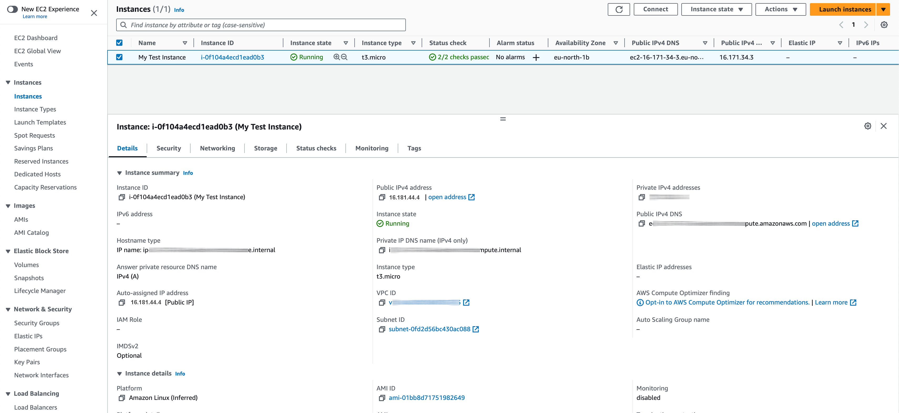

Setting up a website with Amazon Lightsail is easy. Though Lightsail makes it easy for you to run your site or blog, it lacks the flexibility of setting up your own server and parameters. While Lightsail is best used for smaller sites, web apps and playgrounds, EC2 is more like for enterprise applications, big data and migrations from on-premise environments. It can also be used by small companies or startups for dynamically scaling CPU, memory and storage. If you've ever worked with DigitalOcean or Vultr, you'll find Amazon EC2 quite similar.
Table of contents:
Amazon EC2 as an IaaS service provides a complete infrastructure that you can configure to suit your needs. With EC2 you launch instances, which are mini computers in plain English. When you launch such an instance, you're actually using a part of a server, dedicated for you and since you are able install and configure the OS, it gives you a feel of running your own system.
AWS offers many kinds of instances:
When you select an instance, you need to plan when and how you are going to use it. Amazon offers several solutions to meet your needs:
I could go on and on about these instances and terms, but I know launching an EC2 instance is more fun then reading documentation, so let's get started!
AWS uses public-key cryptography to secure the login information for your instance. A Linux instance has no password; you use a key pair to log in to your instance securely. You specify the name of the key pair when you launch your instance, then provide the private key when you log in using SSH.
The private key file is automatically downloaded to your computer. Save it in a safe place. If you lose it, you will need to generate another key!
If you plan on using an SSH client on a macOS or Linux computer to connect to your Linux instance, use the following command to set the permissions of your private key file so that only you can read it.
Security groups act as a firewall for associated instances, controlling both inbound and outbound traffic. You must add rules to a security group that enable you to connect to your instance from your IP address using SSH.
There are many ways to connect to your instance. I will show you how to connect to your instance with EC2 Instance Connect and transfer files between your computer and your instance.
.......This was pretty easy so let's try connecting from your machine using SSH. I'm using MacOS.
To connect to your instance, you will need the following information:
To get the basic information about your instance, click Instances on the left and select your instance. You can find the DNS name under Public IPv4 DNS. If you assigned an IPv6 address to your instance, you can connect to it using that address instead of a public IPv4 address or a public IPv4 DNS hostname. In order to do this, your computer must be configured to use IPv6.
You can connect to your instance using the username for your user account or the default username for the AMI that you used to launch your instance. The default username for Amazon Linux is ec2-user.
Now you have everything you need to connect to your instance.
On MacOS open terminal and type this:
ssh -i Documents/Learning/AWS/EC2/EC2Key.pem myuser@ec2-16-181-44-4.eu-north-1.compute.amazonaws.com
Make sure you type the fully-qualified path to the location on your computer of the .pem file.
If you see a timeout error, the IP address you earlier provided in your security group may already have been changed. At least that's what happened in my case. To fix this, edit the Security Group you created earlier and modify your local IP address on port 22. For more troubleshooting, please see https://repost.aws/knowledge-center/ec2-linux-resolve-ssh-connection-errors.
Now should see a message like this:
The authenticity of host 'ec2-16-181-44-4.eu-north-1.compute.amazonaws.com (16.181.44.4)' can't be established.
ED25519 key fingerprint is SHA256:toalhxnx30xUq1cUC6GSTUBsdx3I/bvjP/GxVGsrj/0.
This key is not known by any other names
Are you sure you want to continue connecting (yes/no/[fingerprint])?
Type yes.
You might see the following error:
Warning: Permanently added 'ec2-16-181-44-4.eu-north-1.compute.amazonaws.com' (ED25519) to the list of known hosts.
@@@@@@@@@@@@@@@@@@@@@@@@@@@@@@@@@@@@@@@@@@@@@@@@@@@@@@@@@@@
@ WARNING: UNPROTECTED PRIVATE KEY FILE! @
@@@@@@@@@@@@@@@@@@@@@@@@@@@@@@@@@@@@@@@@@@@@@@@@@@@@@@@@@@@
Permissions 0644 for 'Documents/Learning/AWS/EC2/EC2Key.pem' are too open.
It is required that your private key files are NOT accessible by others.
This private key will be ignored.
Load key "Documents/Learning/AWS/EC2/EC2Key.pem": bad permissions
ec2-user@ec2-16-181-44-4.eu-north-1.compute.amazonaws.com: Permission denied (publickey,gssapi-keyex,gssapi-with-mic).
It is generally a good practice - and in this case it is required - to restrict access to the Private key. Use the following command in your SSH client to set the permissions of the private key so that only you can use it:
chmod 400 Documents/Learning/AWS/EC2/EC2Key.pem
Finally we are connected:
__| __|_ )
_| ( / Amazon Linux 2 AMI
___|\___|___|
https://aws.amazon.com/amazon-linux-2/
[ec2-user@ip-182-41-52-53 ~]$
To transfer a file to the destination on the instance, enter the following command from your computer.
scp -i Documents/Learning/AWS/EC2/EC2Key.pem Documents/Learning/AWS/EC2/test.rtf ec2-user@ec2-16-181-44-4.eu-north-1.compute.amazonaws.com
The format is:
scp -i /path/key-pair-name.pem /path/my-file.txt ec2-user@instance-public-dns-name:path/
To see where this file is going to be uploaded on the server, type pwd after connecting to the instance. Then exit.
[ec2-user@ip-182-41-52-53 ~]$ pwd
/home/ec2-user
Make sure you run the scp command from your computer and after you connected to the server, because the instance is unable to reach files on your local computer.
This time I ran into this error:
scp: /test.rtf: Permission denied
This means that the remote destination directory doesn't have the necessary permissions to allow the ec2-user to write files to it.
To overcome this, change the folder to the home folder and use this command:
scp -i Documents/Learning/AWS/EC2/EC2Key.pem "Documents/Learning/AWS/EC2/test.rtf" ec2-user@ec2-16-181-44-4.eu-north-1.compute.amazonaws.com:~
This time it worked:
test.rtf 100% 367 7.6KB/s 00:00
To transfer this file to your local computer, reverse the order of the host parameters:
scp -i Documents/Learning/AWS/EC2/EC2Key.pem ec2-user@ec2-16-181-44-4.eu-north-1.compute.amazonaws.com:~/test.rtf Documents/Learning/AWS/EC2/test2.rtf
Let's see the current folder:
[ec2-user@ip-182-41-52-53 ~]$ pwd
/home/ec2-user
Let's create a new folder:
mkdir myfiles
Now list the files and folders in the current folder:
[ec2-user@ip-182-41-52-53 ~]$ ls -l
total 4
drwxrwxr-x 2 ec2-user ec2-user 6 Aug 18 12:28 myfiles
-rw-r--r-- 1 ec2-user ec2-user 367 Aug 18 12:17 test.rtf
The myfiles folder can be now written by the owner and the group, including the ec2-user. Let's upload the same test.rtf file into that folder:
scp -i Documents/Learning/AWS/EC2/EC2Key.pem Documents/Learning/AWS/EC2/test.rtf ec2-user@ec2-16-181-44-4.eu-north-1.compute.amazonaws.com:~/myfiles
Let's go into the myfiles folder and see if the file is really there:
cd myfiles
ls -l
total 4
-rw-r--r-- 1 ec2-user ec2-user 367 Aug 18 12:32 test.rtf
Finally, navigate back to the parent folder by typing the following command:
cd ..
Connect to the instance first. Then create a new user:
sudo adduser myuser
Add the new user to the sudo group:
sudo usermod -aG sudo myuser
To confirm that the new user has the correct permissions, switch to their account using the su command and then test if they can run sudo commands.
su - myuser
sudo ls -l /root # Test a sudo command
exit # Exit from the new user's shell
If you want the new user to log in using SSH key pairs (which is more secure than passwords), you can set up SSH key authentication for the new user. To do this, you can either generate a new SSH key pair on your computer, or retrieve the public key from the key pair you created earlier. Since there is no point in generating a new key pair, let's retrieve the public key of our existing key pair:
ssh-keygen -y -f Documents/Learning/AWS/EC2/EC2Key.pem
The command returns the public key, as shown in the following example:
ssh-rsa AAAAB3NzaC1yc2EADDDDAQABAAABAQCC0TBJiFkjBsE9aR1DyqVy8KZT9o/Ogt//oT1iJL1OzMDJn7v8w8ROUStybBjW+vv6Plxg3LTw305ts5JvRJkBaFete5ZWmTOnt7tvu/ST6JPj1OHYa8ba8RnVnwefXQY2gMtKJTFEJA2SFSne+4WX4fxXbo2pSo2bHKp1GgxjlxNoZP5LhNqGBsGHcmOmT5YXub6zRiy4hJqbjeYVb5r8KwSF4UlpoFpbPN1kYn+qyAX8Dc6pW0KCcD6ofDZaRh9d6rxT4wNT9R9EW0n9eaf59aWcabjUXSiFTzgBy8JDOREKeRmgmsfIB0UxiAwKT4W3f1qSUZWVTVkhrlrwCjsT
Now connect to the instance anc create a new user:
sudo adduser myuser
Switch to the new user so that the directory and file that you create will have the proper ownership.
sudo su - myuser
Now instead of this
[ec2-user@ip-182-41-52-53 ~]$
You should see this as the prompt:
[myuser@ip-182-41-52-53 ~]$
Each user has a home directory on the server. Create a folder called .ssh and change its file permissions to 700. 700 means that only the owner can read, write and open the directory.
mkdir .ssh
chmod 700 .ssh
Create a file named authorized_keys in the .ssh directory and change its file permissions to 600 (only the owner can read or write to the file):
touch .ssh/authorized_keys
chmod 600 .ssh/authorized_keys
Finally, Open the authorized_keys file using your favorite text editor (such as vim or nano).
nano .ssh/authorized_keys
Paste the public key that you retrieved a few steps before. Now you should be able to use this user to log into the instance. Type exit and then type exit again. Now use the new user to log in with the same private key:
ssh -i Documents/Learning/AWS/EC2/EC2Key.pem myuser@ec2-16-181-44-4.eu-north-1.compute.amazonaws.com
You might notice that the current use has no sudo privileges. Once you type a sudo command, such as sudo ls -l, the client asks for a password. We did not set up a password for the user, because accessing the instance via SSH is much safer. To give a user sudo privileges, perform the following steps:
Connect to the instance with the default user, such as ec2-user. The default user has sudo privileges by default.
Open the sudoers file:
sudo visudo
Then add the following line:
myuser ALL=(ALL) NOPASSWD:ALL
This line allows the user newusername to run any command with sudo without being prompted for a password. Save and Exit.
Now disconnect and reconnect to the instance with the other user and run a sudo command.
That's the end of this tutorial.